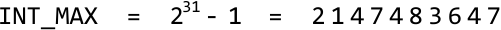

Reverse 32-Bit Integer
MediumReverse the digits of a signed 32-bit integer. If the reversed integer overflows (i.e., is outside the range [−231, 231−1]), return 0. Assume the environment only allows you to store integers within the signed 32-bit integer range.
Example 1:
Input: n = 420
Output: 24
Example 2:
Input: n = -15
Output: -51
Intuition
The primary challenge with this problem is in handling its edge cases. Before tackling these edge cases, let’s first try handling the more basic cases and later see how we would need to modify our strategy.
Reversing positive numbers
Consider n = 123. Let's try building the reversed integer one digit at a time. The first thing to figure out is how to iterate through the digits of n to build our reversed number (initially set to 0):
![Image represents a simple illustration demonstrating a reversal operation. The left side shows an input sequence 'n = 1 2 3', indicating a variable 'n' assigned a sequence of three integers: 1, 2, and 3. A comma follows this sequence. The right side displays the result of a reversal operation, labeled 'reversed n = θ', showing the variable 'n' after reversal is assigned an empty sequence represented by the symbol 'θ'. There is no explicit connection drawn between the input and output; the implication is that the operation transforms the input sequence into an empty sequence. The text 'reversed' acts as a label describing the transformation applied to the input sequence 'n'.](images/19_02_reverse-32-bit-integer-img-4b3a2579.svg)
One way to do this is by starting at the last digit of n and appending each digit to reversed_n:
![Image represents a visual depiction of a recursive function reversing a sequence of numbers. Three horizontal rows illustrate the function's iterative steps. Each row shows an input sequence 'm' (on the left) and the corresponding reversed output sequence 'reversed_n' (on the right). Orange boxes contain the numbers in each sequence. Orange arrows connect the input 'm' to the output 'reversed_n' in each row. The first row shows the input sequence 'm = 1 2 3' and the output 'reversed_n = 3'. The second row shows the input 'm = 1 2' and the output 'reversed_n = 3 2', building upon the previous step. The third row shows the input 'm = 1' and the final reversed output 'reversed_n = 3 2 1', completing the reversal of the initial sequence. The diagram visually demonstrates how the function recursively processes the input sequence, adding the next element to the beginning of the reversed sequence in each iteration.](images/19_02_reverse-32-bit-integer-img-bc6edb15.svg)
Let’s explore how we can do this. To extract the last digit, we can use the modulus operator: n % 10. This operation effectively finds what the remainder of n would be if divided by 10:
![Image represents a code snippet demonstrating how to extract the last digit from an integer. The top line declares an integer variable 'n' and assigns it the value 123. The next line shows a calculation to extract the last digit: 'digit = n % 10'. This uses the modulo operator (%) which returns the remainder after division. In this case, 123 modulo 10 equals 3, representing the remainder when 123 is divided by 10. The final line shows the result of this calculation: 'digit = 3', indicating that the last digit of 123 is 3. The arrangement is vertical, with each line representing a step in the calculation, flowing from the variable declaration to the calculation and finally to the result.](images/19_02_reverse-32-bit-integer-img-4e9bfd6b.svg)
After extracting the last digit, we can remove it by dividing n by 10, which shifts the second-to-last digit to the last position, preparing it for the next iteration:
![Image represents a mathematical equation demonstrating integer division. The equation is structured as follows: 'n = n // 10'. This indicates that a variable 'n' is being assigned a new value. The new value is calculated by performing integer division (represented by '//') of the original value of 'n' by 10. Below this, a second line shows ' = 12', indicating that after the integer division operation, the variable 'n' now holds the value 12. The equation implies that the original value of 'n' before the division was 120 (since 120 // 10 = 12). There are no URLs or parameters present; the image solely depicts a simple arithmetic operation within a coding context, likely illustrating a specific step in an algorithm or calculation.](images/19_02_reverse-32-bit-integer-img-3b90cd9f.svg)
Once that’s done, let’s add the last digit extracted to our reversed number:
![Image represents a line of code snippet, likely from a program designed to reverse an integer. The snippet shows an assignment statement where a variable named `reversed_n` is being updated. The operation is an addition (`+=`) of a variable named `digit`, which currently holds the value 3. This suggests that the algorithm is iteratively building the reversed integer by appending digits one at a time. The `reversed_n` variable accumulates the reversed number, with `digit` representing the next digit to be added to the reversed number. The overall structure implies a loop where `digit` would take on different values in successive iterations, each contributing to the construction of `reversed_n`.](images/19_02_reverse-32-bit-integer-img-30801ac2.svg)
Below, we see the current states of n and reversed_n:
![Image represents a simple illustration of a coding pattern, specifically demonstrating the concept of reversing a sequence. The image consists of a linear arrangement of text elements. It begins with 'n = 1 2,', indicating an initial sequence represented by the variable 'n' containing the values 1 and 2. This is followed by the word 'reversed', signifying the operation being performed. Finally, 'n = 3' shows the reversed sequence, implying that the original sequence '1 2' has been reversed to become '2 1' (although only the result '3' is shown, suggesting a simplified or incomplete representation of the reversal process, possibly due to context missing from the image). There are no visual connections or arrows; the relationship between the initial and reversed sequences is implied solely through the textual description and the change in the value of 'n'.](images/19_02_reverse-32-bit-integer-img-c6e2c396.svg)
To process the next digit, let’s extract it from n using the modulus operation, then remove it by dividing n by 10:
![Image represents a code snippet illustrating an algorithm to extract digits from an integer. The top line shows an assignment statement: `digit = n % 10`, where `n` represents an integer input and the modulo operator (`%`) calculates the remainder when `n` is divided by 10, effectively extracting the last digit. This is then assigned to the variable `digit`. Below, a sample calculation is shown, where the result of `n % 10` is `2`. The next line shows another assignment statement: `n = n // 10`, using floor division (`//`) to remove the last digit from `n` by integer division. A sample calculation follows, showing the result of `n // 10` as `1`. The arrangement vertically displays the sequential steps of the algorithm: first extracting the last digit, then updating the integer by removing that digit. The algorithm implicitly iterates to extract all digits sequentially.](images/19_02_reverse-32-bit-integer-img-40324b09.svg)
To append this digit to reversed_n, we can multiply reversed_n by 10 to shift its digits to the left, making space for the new digit. Then, we just add the new digit as before:
![Image represents a step-by-step calculation illustrating a coding pattern, likely for reversing an integer. The top line shows an equation: `reversed_n = 10 * reversed_n + digit`. This suggests an iterative process where `reversed_n` accumulates the reversed digits of a number, and `digit` represents the next digit to be added. The next line shows a specific instance of this equation: `= 30 + 2`, implying that at this step, the current reversed number (`reversed_n`) is 30, and the next digit (`digit`) is 2. The final line shows the result of this addition: `= 32`, indicating the updated value of `reversed_n` after incorporating the digit 2. The overall structure demonstrates how a reversed integer is constructed digit by digit through repeated multiplication and addition.](images/19_02_reverse-32-bit-integer-img-97f59e3e.svg)
We can repeat the above process until all digits of n are appended to reversed_n (i.e., until n equals 0). Here’s a breakdown of this process:
- Extract the last digit:
digit = n % 10. - Remove the last digit:
n = n // 10. - Append the digit:
reversed_n = reversed_n * 10 + digit.
Reversing negative numbers
Before considering a separate strategy to handle negative numbers, let's first check if the set of steps above also work for negative numbers. Applying these steps to n = -15 gives:
![Image represents a step-by-step calculation demonstrating a coding pattern for reversing a negative integer. The top line initializes two variables: `n` to -15 and `reversed_n` to 0. Below, the calculation proceeds in three steps. First, `digit` is calculated as `n % 10`, resulting in -5 (the modulo operator finds the remainder after division). Second, `n` is updated to `n // 10` using floor division, resulting in -1 (integer division discarding the remainder). Finally, `reversed_n` is updated using the formula `10 * reversed_n + digit`, which incorporates the extracted digit into the reversed number, resulting in -5. The calculations are shown with both the formula and the resulting value for each step, illustrating the iterative process of extracting digits and building the reversed integer.](images/19_02_reverse-32-bit-integer-img-d85b2154.svg)
![Image represents a step-by-step calculation demonstrating a single iteration of an algorithm to reverse a negative integer. The top line initializes two variables: `n` with a value of -1 and `reversed_n` with a value of -5. Below, the algorithm extracts the last digit of `n` using the modulo operator (`%`), assigning the result (-1) to the variable `digit`. Next, integer division (`//`) is used to remove the last digit from `n`, updating `n` to 0. Finally, the reversed number is updated by multiplying the current `reversed_n` by 10, adding `digit`, and assigning the result (-51) back to `reversed_n`. The calculations are clearly shown with the formulas and their results displayed sequentially, illustrating the flow of data between the variables.](images/19_02_reverse-32-bit-integer-img-6a749afe.svg)
As we can see, it works for negative numbers. Now, let’s tackle situations in which reversing a number could result in integer overflow or underflow.
Detecting integer overflow
If the reverse of a positive number is larger than 231−1, it will overflow, and we should return 0. Let’s call this maximum value INT_MAX.

31 - 1 =', indicating that the maximum integer value is calculated by subtracting 1 from 2 raised to the power of 31. The result of this calculation, 2147483647, is displayed to the far right of the equation, representing the maximum positive value that can be stored in a 32-bit signed integer variable. The equation demonstrates a common calculation in computer science to determine the upper limit of integer data types based on their bit size."/>Initially, it might seem sufficient to reverse the number completely, check if it exceeds 231−1, and return 0 if it does. However, in an environment where integers larger than 231−1 cannot be stored, attempting to reverse such an integer would cause an overflow:
So, let’s think of another way to detect overflow.
We're constructing the number reversed_n one digit at a time, which means we need to ensure not to cause the number to overflow with each new digit we add. Let's think about when adding a new digit might cause reversed_n to become too large. Here's how we can analyze this:
If reversed_n is equal to 214748364 (i.e., INT_MAX // 10), then the final digit we can add to it must be less than or equal to 7 to avoid an overflow (since 214748364**7** == INT_MAX):
![Image represents a step-by-step calculation demonstrating the appending of a digit to a reversed number. Initially, the variable `reversed_n` holds the value 21478364, and the variable `digit` holds the value 7. The process, labeled 'append digit:', involves the calculation `reversed_n = reversed_n * 10 + digit`. This results in a new value for `reversed_n`, which is 214783647. A comparison is then made, showing that this new value is equal to `INT_MAX` (presumably representing the maximum value for an integer data type), and an arrow indicates that this equality leads to 'no overflow,' suggesting the calculation successfully appended the digit without exceeding the integer's maximum capacity.](images/19_02_reverse-32-bit-integer-img-13c30b7d.svg)
![Image represents a step-by-step calculation demonstrating integer overflow. The top line initializes a variable `reversed_n` to the value 21478364 and a variable `digit` to 8. The second line shows the calculation for appending `digit` to `reversed_n`: `reversed_n` is multiplied by 10 and `digit` is added to the result, updating `reversed_n`. The third line displays the outcome of this calculation: `reversed_n` becomes 214783648. A comparison follows, indicating that this new value (214783648) exceeds `INT_MAX` (the maximum value for an integer data type), resulting in an integer overflow, which is highlighted in red as 'overflow'. The gray text 'append digit:' acts as a label describing the operation performed in the second line.](images/19_02_reverse-32-bit-integer-img-8c1a1cb7.svg)
Now, keep in mind that when reversed_n == INT_MAX // 10, only one more digit can be added to it. The key observation here is that this digit can only ever be 1 because a larger final digit would be impossible, as shown below:
![Image represents two examples illustrating a coding pattern related to integer reversal and overflow. Each example shows a process where a number (`reversed_n`) is reversed, and the result (`n`) is compared against the maximum integer value (`INT_MAX`). The first example begins with `reversed_n = 2147483641`. Above it, in orange text, is `INT_MAX // 10`, indicating a potential division operation. A grey arrow labeled 'implies' connects `reversed_n` to the reversed number `n = 1463847412`. The second example follows the same structure, starting with `reversed_n = 2147483642`, also with `INT_MAX // 10` above it. The reversed number is `n = 2463847412`. However, this result is greater than `INT_MAX`, as indicated by `n = 2463847412 > INT_MAX`, leading to a red 'impossible input' label, highlighting a potential overflow error. Both examples use the same initial operation (`INT_MAX // 10`) suggesting a common step in the algorithm before the reversal.](images/19_02_reverse-32-bit-integer-img-30a897f0.svg)
This means that when reversed_n == INT_MAX // 10, the last digit added to it won’t cause an overflow, meaning we don’t need to check the last digit in this case.
If reversed_n is already larger than INT_MAX // 10, adding any digit will cause it to overflow. We can handle this case with the following condition:
if reversed_n > INT_MAX // 10: return 0
Detecting integer underflow
We can apply similar logic to the above for handling integer underflow. Here, we just need to check that reversed_n never falls below INT_MIN // 10:
if reversed_n < INT_MIN // 10: return 0
[Interactive code editor — visit bytebytego.com to run]
Implementation
In Python, using the modulus operator (%) with a negative number gives a positive result. To avoid this, we can instead use math.fmod and cast its result to an integer to attain a negative modulus value.
For division, Python's // operator performs floor division, which can result in an undesired value when dealing with negative numbers (e.g., -15 // 10 results in -2, instead of the desired -1). To achieve the desired behavior, use / for division and cast its result to an integer.
import math
def reverse_32_bit_integer(n: int) -> int:
INT_MAX = 2**31 - 1
INT_MIN = -2**31
reversed_n = 0
# Keep looping until we've added all digits of 'n' to 'reversed_n' in reverse
# order.
while n != 0:
# digit = n % 10
digit = int(math.fmod(n, 10))
# n = n // 10
n = int(n / 10)
# Check for integer overflow or underflow.
if reversed_n > int(INT_MAX / 10) or reversed_n < int(INT_MIN / 10):
return 0
# Add the current digit to 'reversed_n'.
reversed_n = reversed_n * 10 + digit
return reversed_n
export function reverse_32_bit_integer(n) {
const INT_MAX = Math.pow(2, 31) - 1
const INT_MIN = -Math.pow(2, 31)
let reversed = 0
// Keep looping until we've added all digits of 'n' to 'reversed_n' in reverse
// order.
while (n !== 0) {
let digit = n % 10
n = (n / 10) | 0 // Truncate towards zero
// Check for integer overflow or underflow.
if (
reversed > Math.trunc(INT_MAX / 10) ||
reversed < Math.trunc(INT_MIN / 10)
) {
return 0
}
// Add the current digit to 'reversed_n'.
reversed = reversed * 10 + digit
}
return reversed
}
class Main {
public Integer reverse_32_bit_integer(int n) {
int INT_MAX = Integer.MAX_VALUE;
int INT_MIN = Integer.MIN_VALUE;
int reversedN = 0;
// Keep looping until we've added all digits of 'n' to 'reversed_n' in reverse
// order.
while (n != 0) {
// digit = n % 10
int digit = n % 10;
// n = n // 10
n = n / 10;
// Check for integer overflow or underflow.
if (reversedN > INT_MAX / 10 || reversedN < INT_MIN / 10) {
return 0;
}
// Add the current digit to 'reversed_n'.
reversedN = reversedN * 10 + digit;
}
return reversedN;
}
}
Complexity Analysis
Time complexity: The time complexity of reverse_32_bit_integer is O(log(n)) because we loop through each digit of n, of which there are roughly log(n) digits. As this environment only supports 32-bit integers, the time complexity can also be considered O(1).
Space complexity: The space complexity is O(1).